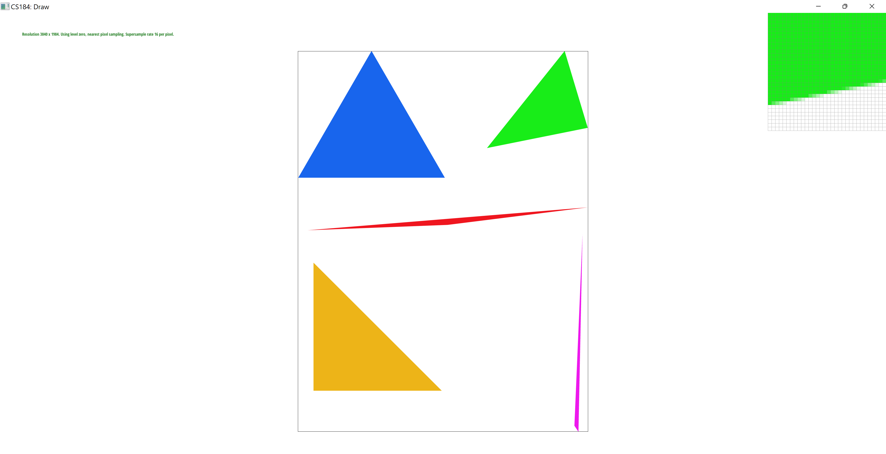
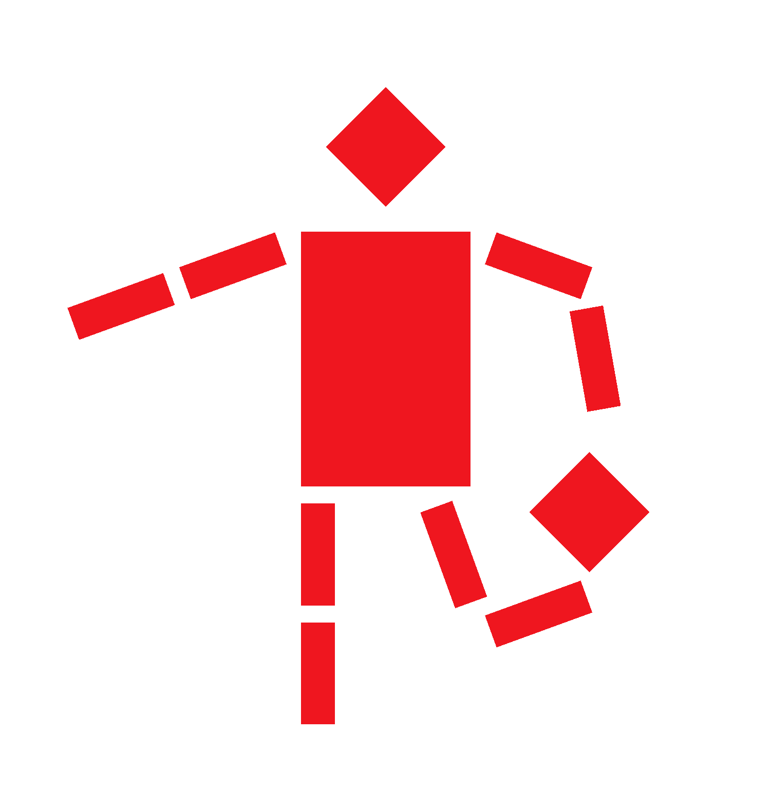
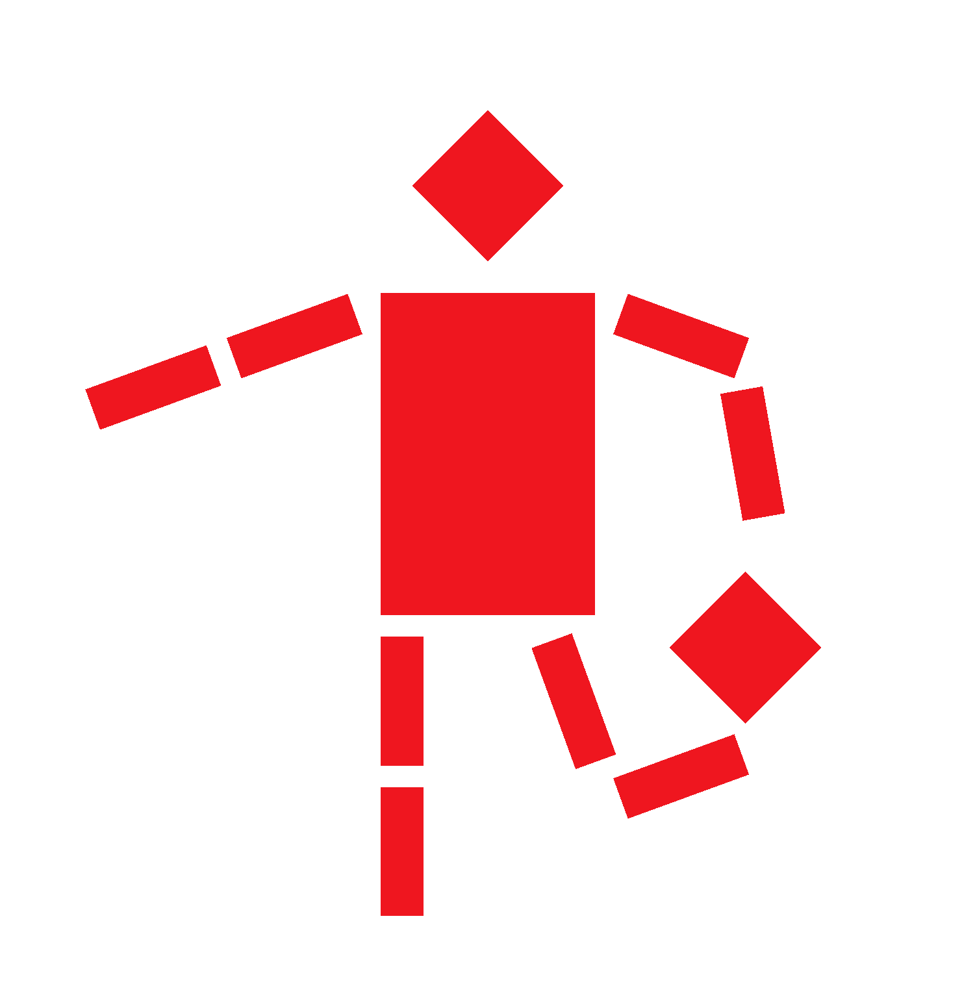

Sampling Rate 1

Sampling Rate 4

Sampling Rate 16
Raiymbek Akshulakov
Yersultan Sapar
In this project, we have created the Rasterizer engine that parses svg files and uses primitives (like triangles) to render the image. We have also implemented additional optimizations like supersampling, mipmap level sampling to mitigate aliasing effects.
To rasterize the triangle we first need tringle itself - three float vertices. Here is the problem which pixels should be colored as part of the tringle and which are should not. Pixels are only on integer coordinates, we can just give float point o tit to color. To finally get the edges of the triangle and understand which pixels are part of the triangle (in other words rasterize), we need to go over all pixels in the bounding box and genetically check if the center of a pixel is inside of the triangle. If the pixel center is inside then it is thought of as part of the tringle.
If you look at this image even from far away it is noticeable how the edges do not really appear straight. It is because even though pixel on the edges is technically in the triangle, but the structure of the pixels does not allow for the actually straight not horizontal line. One way to get rid of it and make the edges look straight is to filter each by point based on how much of this pixel is inside of the triangle. One way to simulate this filtering is to imagine several subpixels inside each pixel. We are going to assign each subpixel a color based on in which tringle its center is. In the end, for each pixel we are just going to get an average of those colors over subpixels. Here are results for 1/4/16 subpixels for one pixel:
As you can see in images above as we increase the sampling rate the triangle border becomes more and more smooth as pixels near the border are closer to white color and lines become smoother from far
For this my_robot I tried to make him do something similar to what a soccer player does here so I added a ball and added some rotation on the leg to look like he also kicked it with his backheel. Also just added some rotation to the hands to look a bit more natural
 

Barycentric coordinates are triples of numbers (t1,t2,t3) that define a point in a 2d plane based on its relation to the triangle vertices. It is like we put masses at the vertices and those coordinates define the distribution of the masses in each point in the 2d plane. Another metaphor would be if we put different liquid colors at each of the vertices and this liquid got distributed from those points. So each point can be defined by the percentage of each color in there. This way we can visualize it by mixing color in each point in a triangle based on the barycentric percentages.

In this problem, we need to sample pixel color in our scene triangle given the corresponding triangle in the texture. We build a correspondence point in the texture space by taking the point with the same barycentric coordinates. However, we still need to know the color of the point since the texture space is discrete but our point is continuous. There are two ways to get the color of the continuous point that we are going to explore - nearest neighbors and bilinear. In nearest neighbors, we are finding the nearest discrete point and simply taking its color. In the bilinear case, we are finding four nearest discrete locations, and similar to barycentric coordinates we are trying to define the point in the rectangle as the sum of weighted rectangle vertices. Once we define it the color we need is just the weighted sum of the vertice colors.

The website link is https://cal-cs184-student.github.io/sp22-project-webpages-yersultan-17/